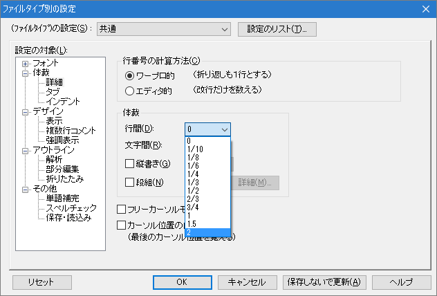
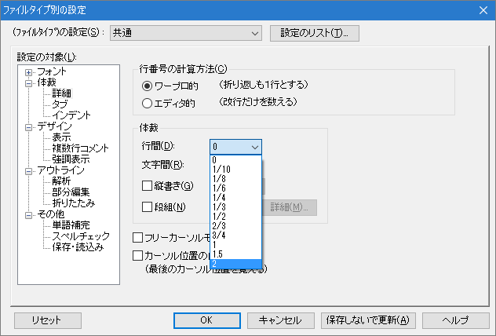

- 画面表示での行間の調整はできないのでしょうか？ 表示容量の制約からだと思いますが、多くのソフトではとかく行間を詰めて表示する傾向があるようで す。行間が狭い場合には、表示された文章を読みとること自体に努力を要し、編集作業や書かれた内容の理解に集中できなくなります。秀丸で行間を自由に調整 できると助かります。

可能です。メニューの「その他→ファイルタイプ別の設定→詳細」を選択し、「行間」のリストボックスから、設定したい行間を選んでください。

可能です。メニューの「その他→ファイルタイプ別の設定→詳細」を選択し、「行間」のリストボックスから、設定したい行間を選んでください。
